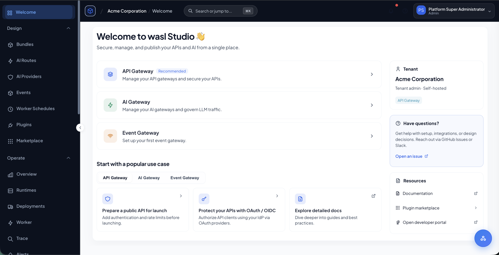
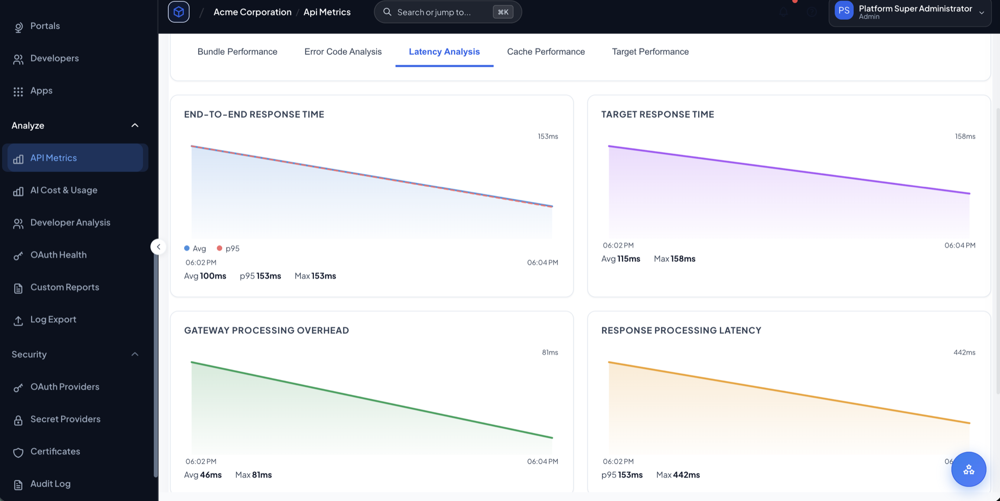

Consolidate gateways and policy operations.
Standardize API, AI, event, MCP, and integration traffic on one governance layer with shared release, trace, and fleet workflows.
Next-generation gateway platform · Releasing soon
WASL brings API management, AI governance, event access, MCP tool governance, integrations, and developer self-service into one governed platform for modern digital services.
Built for platform teams governing APIs, AI apps, event streams, MCP tools, and integrations across hybrid environments.
Solutions
WASL gives every stakeholder a shared platform language: platform teams get control, AI teams get guardrails, architects get consolidation, and developers get a faster path to secure consumption.
Standardize API, AI, event, MCP, and integration traffic on one governance layer with shared release, trace, and fleet workflows.
Route model and MCP tool traffic through identity, privacy, guardrail, provider, and cost controls before it reaches production users.
Govern cloud, private, partner, and edge traffic consistently while preserving local execution and enterprise boundaries.
Give internal teams and partners a self-service catalog for APIs, event channels, credentials, subscriptions, and usage insight.
Unified architecture
WASL connects the people and applications consuming digital services to the runtime fleets that enforce policy across APIs, AI requests, event streams, MCP tool calls, and integration flows.
Platform
Traditional gateways were built for one era of APIs. WASL is designed for the next one: API products, AI applications, event-driven services, backend integrations, partner access, and developer onboarding governed from one product surface.
Publish secure API products with routing, authentication, quotas, transformations, traffic protection, and full lifecycle control.
Put enterprise controls in front of every model call: identity, guardrails, privacy, provider routing, fallback, usage limits, and cost controls.
Expose event streams safely to apps, partners, and teams without leaking broker complexity or bypassing governance.
Expose governed tools for agents, control external MCP server access, and audit what AI agents are allowed to do.
Compose backend calls, transform payloads, enrich requests, and automate service logic close to the gateway.
Connect core systems, queues, data platforms, object stores, search engines, vector stores, and SaaS services through governed connectors.
Give platform teams a command center and developers a self-service catalog for discovery, subscriptions, credentials, and usage insight.
Interactive preview
Switch between API, AI, event, MCP, and integration traffic to see how WASL applies controls, validates requests, protects sensitive data, and returns traceable outcomes from one platform.
Why consolidate
Separate tools for APIs, AI, events, MCP, integrations, and portals create policy drift, blind spots, and slow delivery. WASL gives teams one place to define control, one place to observe traffic, and one place to publish secure digital products.
Hybrid delivery
WASL is built for real enterprise estates: cloud, private cloud, on-premises, regional environments, and edge locations. Platform teams keep central visibility and governance while traffic stays where performance, compliance, and network boundaries require it.
AI Gateway
WASL gives AI teams a governed path to every model and agent workflow. Apply identity, privacy, safety, routing, usage, and cost controls before AI traffic leaves your environment.

Studio + Portal
WASL Studio gives platform teams a premium workspace to design traffic products, enforce governance, coordinate releases, and understand usage. The Developer Portal turns those products into a polished self-service catalog for engineering teams, partners, and customers.
Intelligence layer
WASL makes traffic explainable. Platform teams get a unified view of latency, failures, policy decisions, AI consumption, consumer usage, and security events across every surface.

Security & governance
WASL gives security and platform teams a consistent way to protect APIs, AI applications, event streams, and integrations without rebuilding controls for every protocol, team, or environment.
Open core · Releasing soon
WASL is designed for adoption without lock-in. Teams can start with the open foundation, prove value locally, and expand into enterprise governance, collaboration, hybrid fleet management, and advanced AI controls when the platform becomes business critical.
Product demo · Releasing soon
See WASL mapped to your API, AI, event, MCP, and integration roadmap. Request a focused walkthrough for your platform, security, and architecture teams.
 WASL
WASL